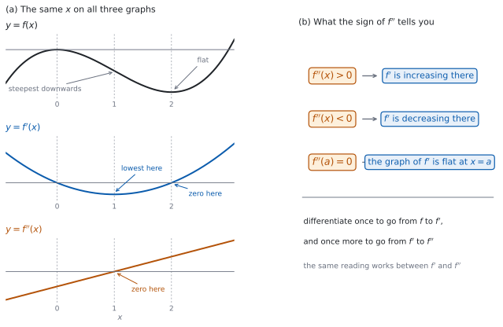
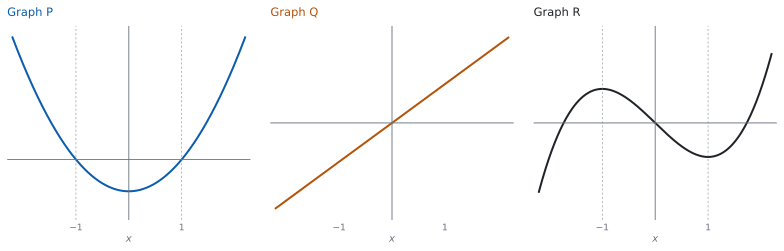

SL 5.7 — The second derivative（第 2 次導関数）
- second derivative（第 2 次導関数）を求められる。
- \(f''(x)\) と \(\dfrac{d^{2}y}{dx^{2}}\) の \(2\) とおりの書き方を、どちらも使える。
- \(f''\) が \(f'\) の変化率であることを説明できる。
- \(f''\) の符号から、\(f'\) が増えているか減っているかを言える。
- \(f\)、\(f'\)、\(f''\) の \(3\) つのグラフを見て、どれがどれかを見分けられる。
- \(f''(a) = 0\) からわかることと、わからないことを区別できる。
The idea
1. もう \(1\) 回微分する
\(f'\) も関数です。 だから、もう \(1\) 回微分できます。
\[ f(x) \ \longrightarrow \ f'(x) \ \longrightarrow \ f''(x) \tag{1}\]
矢印は「微分する」という意味です。\(2\) 回微分して出てくる \(f''\) を、second derivative（第 2 次導関数）といいます。
\(f(x) = x^{6}\) なら \(f'(x) = 6x^{5}\)、もう \(1\) 回微分して \(f''(x) = 30x^{4}\) です。
規則は \(1\) 回目とまったく同じです。 SL 5.3、SL 5.6a、SL 5.6b の規則を、\(f'\) にもう \(1\) 度使うだけです。
2. 記号のかき方
| 書き方 | 読み方 | もとの形 |
|---|---|---|
| \(f''(x)\) | f double dash of x | \(f(x)\) |
| \(\dfrac{d^{2}y}{dx^{2}}\) | d two y by d x squared | \(y\) |
どちらも試験に出ます。 問題文が \(f(x)\) で与えていれば \(f''(x)\)、\(y\) で与えていれば \(\dfrac{d^{2}y}{dx^{2}}\) と書くのが自然です。
\(\dfrac{d^{2}y}{dx^{2}}\) の \(2\) の位置に気をつけてください。 上は \(d^{2}y\)、下は \(dx^{2}\) です。\(\dfrac{dy^{2}}{dx^{2}}\) ではありません。
\(f''\) は \((f')^{2}\) ではありません。 \(2\) 乗ではなく、\(2\) 回微分するという意味です。
3. \(f''\) は \(f'\) の変化率
\(f'\) が \(x\) とともにどう変わるかを表すのが \(f''\) です（SL 5.1）。
\(f'\) は \(f\) の傾きでした。だから \(f''\) は、傾きの変わり方です。
| 見ているもの | それを表すもの |
|---|---|
| \(f\) の値 | \(f\) |
| \(f\) の傾き | \(f'\) |
| \(f'\) の傾き | \(f''\) |
単位は、微分するたびに横軸の単位で割られます。 時間 \(t\) 秒に対して位置 \(s\) が m なら、\(\dfrac{ds}{dt}\) は m/s、\(\dfrac{d^{2}s}{dt^{2}}\) は (m/s)/s、つまり m/s\(^{2}\) です。この見方は SL 5.9 で使います。
4. \(f''\) の符号と \(f'\) の増減
\(f''\) の符号は、\(f'\) について SL 5.2 と同じことを言います。 ただし、見る相手が \(f\) ではなく \(f'\) です（図 1 (b)）。
| \(f''\) のようす | その範囲で \(f'\) は |
|---|---|
| ある範囲でずっと \(f''(x) > 0\) | 増加している |
| ある範囲でずっと \(f''(x) < 0\) | 減少している |
| \(x = a\) で \(f''(a) = 0\) | \(f'\) のグラフが \(x = a\) で停留点をもつ |
増加・減少は、区間で言います（SL 5.2）。「\(x = 3\) で増加している」という言い方はしません。
「\(f'\) が増えている」は「\(f\) が増えている」ではありません。 \(f'\) が \(-5\) から \(-2\) に増えるあいだ、\(f\) はずっと減っています。
5. \(f\) のグラフでの見え方
\(f'' > 0\) の範囲では、\(f\) のグラフの傾きがだんだん大きくなります。 その範囲で \(f\) が下がっているなら、くだり方はだんだんゆるくなります。上がっているなら、上がり方はだんだん急になります。
\(f'' > 0\) だからといって、\(f\) が上がりはじめるとはかぎりません。 下がりつづけたまま、くだり方だけがゆるくなることもあります。\(f(x) = e^{x}\) のように、\(f'' > 0\) でずっと上がりつづける関数もあります。
\(f'' < 0\) の範囲では、その逆です。 傾きがだんだん小さくなります。
この形の呼び名と、\(f\) のグラフについての判定は SL 5.8a で扱います。 このページでは、\(f''\) が何かと、その符号が \(f'\) について何を言うかまでです。
6. \(3\) つのグラフを見分ける
\(x\) をそろえて縦に並べると、対応が見えます（SL 2.3、図 1 (a)）。
| \(f\) のグラフ | \(f'\) のグラフ |
|---|---|
| 水平なところ | \(x\) 軸と出会う（横切るか、触れる） |
| 上がっているところ | \(x\) 軸より上 |
| 下がっているところ | \(x\) 軸より下 |
| そのあたりでのぼり方がいちばん急なところ | 山（そのあたりでいちばん高い） |
| そのあたりでくだり方がいちばん急なところ | 谷（そのあたりでいちばん低い） |
「\(x\) 軸と出会う」の \(2\) 通りのちがいは SL 5.2 です。 \(f' = 3x^{2}\) のように、触れるだけで符号が変わらないこともあります。
急なところの読み方が使えるのは、グラフの途中にある場所だけです。 かいてある範囲の端では、\(f'\) が山でも谷でもないのに、いちばん急に見えることがあります。
同じ表が、\(f'\) と \(f''\) のあいだにも成り立ちます。 名前が \(1\) つずつずれるだけです。
次数でも見当がつきます。 \(f\) が \(3\) 次式なら \(f'\) は \(2\) 次式、\(f''\) は \(1\) 次式です。\(1\) 次以上のあいだは、微分するたびに次数が \(1\) 下がります（定数を微分すると \(0\) です）。
7. \(f''(a) = 0\) でわかること
\(f''(a) = 0\) からわかるのは、\(f'\) のグラフが \(x = a\) で水平だということだけです。
これだけでは、\(f\) のグラフについて結論は出せません。 \(f'\) がそこで山なのか、谷なのか、それとも水平に通りすぎるだけなのかは、\(f''\) の値 \(1\) つでは決まりません。
判定のしかたは SL 5.8a で扱います。 このページでは、\(f''(a) = 0\) となる \(x\) を求めるところまでにします。
第 2 次導関数を求める計算は、電卓なしで出します。このページの例題と演習は、すべて手で解ける形です。
グラフを見分ける問題は、Paper 1 でも Paper 2 でも出ます。
グラフ画面に \(y = f(x)\)、\(y = f'(x)\)、\(y = f''(x)\) を同時にかくと、\(3\) つの対応を目で確かめられます。
電卓の角の設定をラジアンにしてください。

Why it works
なぜ、もう \(1\) 回微分してよいのでしょうか。 \(f'\) も、\(x\) を入れると値が \(1\) つ決まる関数だからです。
\(f'\) のグラフがかける以上、その傾きも考えられます。その傾きの関数が \(f''\) です。 新しい規則は要りません。
なぜ、\(f''\) の符号が \(f'\) の増減を決めるのでしょうか。 SL 5.2 を、\(f\) ではなく \(f'\) に当てはめているだけだからです。
SL 5.2 は「導関数が正なら、もとの関数は増えている」と言っています。ここでの「もとの関数」を \(f'\)、「導関数」を \(f''\) と読みかえると、表 3 になります。新しい事実ではなく、同じ事実を \(1\) 段上で使っています。
なぜ、記号が \(\dfrac{d^{2}y}{dx^{2}}\) なのでしょうか。 \(\dfrac{d}{dx}\) を \(2\) 回使ったことを、短く書いたものだからです。
\[ \frac{d}{dx}\left(\frac{dy}{dx}\right) = \frac{d^{2}y}{dx^{2}} \tag{2}\]
上の \(d\) が \(2\) つ、下の \(dx\) が \(2\) つあると考えると、\(d^{2}y\) と \(dx^{2}\) の形が覚えやすくなります。これは記号の約束で、\(2\) 乗の計算ではありません。
なぜ、\(f''(a) = 0\) だけでは足りないのでしょうか。 \(f'\) のグラフが水平になる形が、\(1\) 通りではないからです。
\(f'\) は \(x = a\) で山かもしれないし、谷かもしれないし、水平に通りすぎるだけかもしれません。どれかを決めるには、\(a\) の左右で \(f''\) の符号がどうなっているかを見る必要があります。 そのやり方は SL 5.8a です。
Worked examples
問題文は英語です。意味が理解できなかったら、問題文の下の「日本語訳」を開いてください。解説は日本語です。
この項目は Paper 1 に出ます。 電卓なしで解ける形にしてあります。
例題 1 The function \(f\) is given by \(f(x) = x^{5} - 4x^{3} + 7x\). Find \(f''(x)\).
日本語訳
関数 \(f\) は \(f(x) = x^{5} - 4x^{3} + 7x\) で与えられます。\(f''(x)\) を求めなさい。
\(1\) 回目。 項ごとに微分します（SL 5.3）。
\[ f'(x) = 5x^{4} - 12x^{2} + 7 \]
\(2\) 回目。 いま出た \(f'\) を、また項ごとに微分します。
\[ f''(x) = 20x^{3} - 24x \]
検算（次数）。 \(5\) 次 \(\to\) \(4\) 次 \(\to\) \(3\) 次 ✓ \(1\) 回ごとに \(1\) つ下がっています。
検算（定数の項）。 \(f'\) の \(+7\) は定数なので、\(f''\) には残りません ✓
検算（係数）。 \(5 \times 4 = 20\)、\(12 \times 2 = 24\) ✓
検算（\(x = 1\) で）。 \(f''(1) = 20 - 24 = -4 < 0\) です ✓ \(f'\) の値は \(x = 0\) で \(7\)、\(x = 1\) で \(5 - 12 + 7 = 0\) と減っているので、合っています。
\[f'(x) = 5x^{4} - 12x^{2} + 7\] \[f''(x) = 20x^{3} - 24x\]
例題 2 The curve \(C\) has equation \(y = xe^{x}\). Find \(\dfrac{d^{2}y}{dx^{2}}\), giving your answer in a factorised form.
日本語訳
曲線 \(C\) は \(y = xe^{x}\) という方程式をもちます。\(\dfrac{d^{2}y}{dx^{2}}\) を、因数分解した形で求めなさい。
\(1\) 回目。 積の微分法です（SL 5.6b）。
\[ \frac{dy}{dx} = xe^{x} + e^{x} \]
\(2\) 回目。 \(xe^{x}\) にもう \(1\) 度積の微分法を使い、\(e^{x}\) はそのまま微分します。
\[ \frac{d^{2}y}{dx^{2}} = \left(xe^{x} + e^{x}\right) + e^{x} = xe^{x} + 2e^{x} \]
\(e^{x}\) でくくります。
\[ \frac{d^{2}y}{dx^{2}} = e^{x}(x + 2) \]
検算（\(x = -2\) で）。 くくった形から \(\dfrac{d^{2}y}{dx^{2}} = 0\) です。\(\dfrac{dy}{dx} = e^{x}(x+1)\) の値は \(x = -3\) で \(-2e^{-3}\)、\(x = -2\) で \(-e^{-2}\)、\(x = -1\) で \(0\) です。\(e > 2\) なので \(2e^{-3} < e^{-2}\)、つまり \(-2e^{-3} > -e^{-2}\) です ✓ \(x = -2\) の左右で \(\dfrac{dy}{dx}\) がどちらも大きいので、そこがいちばん低いところです。
検算（\(e^{x}\) は消えない）。 \(2\) 回微分しても、どちらの項にも \(e^{x}\) が残っています ✓ 多項式だけなら次数が下がりますが、\(e^{x}\) を含む式では下がりません。
検算（\(x = 0\) で）。 \(\dfrac{d^{2}y}{dx^{2}} = 2\) です ✓ \(\dfrac{dy}{dx}\) の値は \(x = 0\) で \(1\)、\(x = 1\) で \(2e \approx 5.4\) と増えているので、\(\dfrac{d^{2}y}{dx^{2}} > 0\) と合っています。
検算（くくり方）。 \(e^{x}(x+2)\) を展開すると \(xe^{x} + 2e^{x}\) ✓ これはくくり方の検算です。
\[\frac{dy}{dx} = xe^{x} + e^{x}\] \[\frac{d^{2}y}{dx^{2}} = xe^{x} + 2e^{x} = e^{x}(x + 2)\]
例題 3 The function \(f\) is given by \(f(x) = x^{3} - 6x^{2} + 5\).
(a) Find \(f''(x)\).
(b) Find the value of \(x\) for which \(f''(x) = 0\).
日本語訳
関数 \(f\) は \(f(x) = x^{3} - 6x^{2} + 5\) で与えられます。
(a) \(f''(x)\) を求めなさい。
(b) \(f''(x) = 0\) となる \(x\) の値を求めなさい。
(a) \(2\) 回微分します。
\[ f'(x) = 3x^{2} - 12x \]
\[ f''(x) = 6x - 12 \]
(b) \(f''(x) = 0\) とおきます。
\[ 6x - 12 = 0 \]
\[ x = 2 \]
検算（代入）。 \(6 \times 2 - 12 = 0\) ✓
検算（次数）。 \(f''\) は \(1\) 次式なので、\(0\) になる \(x\) は \(1\) つだけです ✓
検算（\(1\) 次式として）。 \(f''(x) = 6x - 12\) は傾き \(6\) の \(1\) 次式なので、\(0\) になるのは \(1\) 度だけです ✓ \(f''(1) = -6\)、\(f''(3) = 6\) と、\(x = 2\) をはさんで値が変わっています。この符号から \(f\) のグラフについて何が言えるかは、SL 5.8a で扱います。
検算（何がわかったか）。 わかったのは、\(f'\) のグラフが \(x = 2\) で水平だということだけです ✓ \(f\) のグラフについての結論は、SL 5.8a です。
(a) \[f'(x) = 3x^{2} - 12x\] \[f''(x) = 6x - 12\]
(b) \[6x - 12 = 0\]
\[x = 2\]
例題 4 The diagram shows the graphs of a function \(f\), its derivative \(f'\) and its second derivative \(f''\), labelled P, Q and R in some order. Identify which graph is \(f\), which is \(f'\) and which is \(f''\). Justify your answer.

日本語訳
図は、ある関数 \(f\)、その導関数 \(f'\)、第 \(2\) 次導関数 \(f''\) のグラフを、順不同で P、Q、R と名づけて表しています。どのグラフが \(f\)、\(f'\)、\(f''\) かを答えなさい。また、その理由を述べなさい。
まず R を見ます。 \(x = -1\) と \(x = 1\) で水平になっています（第 6 節）。
P は、その \(2\) か所で \(x\) 軸と出会っています。 だから P は R の導関数の候補です。
Q は \(x = 0\) でしか \(0\) になりません。 だから Q は R の導関数ではありえません。残るのは P です。
次に P を見ます。 \(x = 0\) でいちばん低くなっています。
Q は、そこで \(x\) 軸と出会っています。 だから Q は P の導関数です。
したがって \(R = f\)、\(P = f'\)、\(Q = f''\) です。
Justify なので、理由を英語で書きます。
検算（次数）。 R は \(3\) 次、P は \(2\) 次、Q は \(1\) 次に見えます ✓ \(1\) 回ごとに \(1\) つ下がっています。
検算（増減）。 R は \(-1 < x < 1\) で下がっていて、P はそこで \(x\) 軸より下です ✓
検算（逆向きに）。 Q は \(x > 0\) で正なので、P は \(x > 0\) で増加しています ✓ P のグラフと合っています。
検算（残りの並べ方）。 \(R = f''\) とすると、\(f'\) は \(R\) を原始関数にもつ形になり、\(3\) 次より低い次数にはなりません ✓ 残る並べ方はどれも次数が合いません。
試験ではこう書く
Graph R is flat at \(x = -1\) and at \(x = 1\). Graph P is zero at exactly those two values, and graph Q is zero only at \(x = 0\), so Q cannot be the derivative of R and P must be. Graph P has its lowest point at \(x = 0\), where graph Q is zero, so Q is the derivative of P. The degrees also fit: R looks cubic, P quadratic and Q linear. Therefore \(R = f\), \(P = f'\) and \(Q = f''\).
（R は \(x = -1\) と \(x = 1\) で水平で、P はちょうどその \(2\) か所で \(0\)、Q は \(x = 0\) でしか \(0\) にならない。だから R の導関数は P である。P は \(x = 0\) で最も低く、Q はそこで \(0\) なので、Q は P の導関数である。次数も合っている、という意味です。）
\(R = f\), \(P = f'\), \(Q = f''\)
P is zero where R is flat and Q is not, so \(P = R'\); Q is zero where P is lowest, so \(Q = P'\)
Common errors
\(f''\) は \(2\) 回微分したもので、\(2\) 乗ではありません（第 2 節）。
正しくは \(\dfrac{d^{2}y}{dx^{2}}\) です（第 2 節）。上は \(d^{2}y\)、下は \(dx^{2}\) です。
\(f''\) を聞かれたら、\(2\) 回微分します（第 1 節）。\(f'\) を答えにしないでください。
\(f''\) が言うのは \(f'\) の増減です（第 4 節）。\(f\) の増減は \(f'\) の符号です。
\(f'\) が積や合成のままなら、\(2\) 回目にも積の微分法や連鎖律が要ります（SL 5.6b）。
\(f''(a) = 0\) からは、\(f'\) のグラフがそこで水平だということしかわかりません（第 7 節）。
Exercises
各問題に、折りたたみが \(3\) つ付いています。日本語訳、解答例（答案用紙に書くべきこと。英語です。英語の答案例が付くものもあります）、解説（なぜそうなるか。日本語です）。
まず自分で解いて、次に解答例と見くらべてください。解説は、合わなかったときだけ開けば十分です。
1 The function \(f\) is given by \(f(x) = x^{4} - 2x^{2} + 3\). Find \(f''(x)\).
日本語訳
関数 \(f\) は \(f(x) = x^{4} - 2x^{2} + 3\) で与えられます。\(f''(x)\) を求めなさい。
\[f'(x) = 4x^{3} - 4x\]
\[f''(x) = 12x^{2} - 4\]
項ごとに \(2\) 回微分します（第 1 節）。
検算（次数）。 \(4\) 次 \(\to\) \(3\) 次 \(\to\) \(2\) 次 ✓
検算（定数の項）。 \(+3\) は \(1\) 回目で消えています ✓
検算（\(x = 0\) で）。 \(f''(0) = -4 < 0\) です ✓ \(f'\) の値は \(x = -0.5\) で \(1.5\)、\(x = 0.5\) で \(-1.5\) と減っているので、合っています。
2 The curve \(C\) has equation \(y = 2x^{3} - 5x\).
(a) Find \(\dfrac{d^{2}y}{dx^{2}}\).
(b) Find the values of \(x\) for which \(\dfrac{dy}{dx}\) is increasing.
日本語訳
曲線 \(C\) は \(y = 2x^{3} - 5x\) という方程式をもちます。
(a) \(\dfrac{d^{2}y}{dx^{2}}\) を求めなさい。
(b) \(\dfrac{dy}{dx}\) が増加する \(x\) の値の範囲を求めなさい。
(a) \[\frac{dy}{dx} = 6x^{2} - 5\]
\[\frac{d^{2}y}{dx^{2}} = 12x\]
(b) \[12x > 0\]
\(\dfrac{dy}{dx}\) is increasing for \(x > 0\)
(a) 問題文が \(y\) で与えているので、答えも \(\dfrac{d^{2}y}{dx^{2}}\) の形で書きます（第 2 節）。
(b) \(\dfrac{dy}{dx}\) が増加する範囲は、\(\dfrac{d^{2}y}{dx^{2}} > 0\) となる範囲です（第 4 節）。答えは区間で書きます。
検算（\(-5\) の項）。 \(1\) 回目で \(-5\) になり、\(2\) 回目で消えます ✓
検算（係数）。 \(2 \times 3 = 6\)、\(6 \times 2 = 12\) ✓
検算（\(2\) 点で）。 \(\dfrac{dy}{dx}\) の値は \(x = 1\) で \(1\)、\(x = 2\) で \(19\) と増えています ✓ どちらも \(x > 0\) の中です。
検算（左側で）。 \(x = -2\) では \(\dfrac{dy}{dx} = 19\)、\(x = -1\) では \(1\) と減っています ✓ \(x < 0\) では増加していません。
3 The function \(f\) is given by \(f(x) = \sqrt{x} + \ln x\), for \(x > 0\). Find \(f''(x)\).
日本語訳
関数 \(f\) は \(f(x) = \sqrt{x} + \ln x\)（\(x > 0\)）で与えられます。\(f''(x)\) を求めなさい。
\[f(x) = x^{\frac{1}{2}} + \ln x\]
\[f'(x) = \frac{1}{2}x^{-\frac{1}{2}} + \frac{1}{x}\]
\[f''(x) = -\frac{1}{4}x^{-\frac{3}{2}} - \frac{1}{x^{2}}\]
根号は先に指数の形に直します（SL 5.6a）。\(\dfrac{1}{x} = x^{-1}\) と見て微分します（SL 5.3）。
検算（指数）。 \(-\dfrac{1}{2}\) から \(1\) を引くと \(-\dfrac{3}{2}\)、\(-1\) から \(1\) を引くと \(-2\) ✓
検算（係数）。 \(\dfrac{1}{2} \times \left(-\dfrac{1}{2}\right) = -\dfrac{1}{4}\) ✓
検算（符号）。 \(x > 0\) で \(f''(x) < 0\) です ✓ \(f'(x) = \dfrac{1}{2\sqrt{x}} + \dfrac{1}{x}\) の値は \(x = 1\) で \(\dfrac{3}{2}\)、\(x = 4\) で \(\dfrac{1}{2}\) と減っています。
4 The curve \(C\) has equation \(y = \sin(3x)\), where \(x\) is in radians. Find \(\dfrac{d^{2}y}{dx^{2}}\).
日本語訳
曲線 \(C\) は \(y = \sin(3x)\)（\(x\) はラジアン）という方程式をもちます。\(\dfrac{d^{2}y}{dx^{2}}\) を求めなさい。
\[\frac{dy}{dx} = 3\cos(3x)\]
\[\frac{d^{2}y}{dx^{2}} = -9\sin(3x)\]
\(2\) 回とも連鎖律が要ります（SL 5.6a）。
検算（内側の \(3\)）。 \(2\) 回とも \(3\) をかけたので、係数が \(3 \times 3 = 9\) になっています ✓
検算（符号）。 \(\cos\) を微分すると \(-\sin\) なので、マイナスが付きます ✓
検算（\(x = 0\) で）。 \(\dfrac{d^{2}y}{dx^{2}} = 0\) です ✓ \(\dfrac{dy}{dx} = 3\cos(3x)\) は \(x = 0\) で最も大きいので、そこで水平です。
5 For a function \(f\), the graph of \(f'\) is a parabola which meets the \(x\)-axis at \(x = 1\) and at \(x = 3\), and which has its lowest point at \(x = 2\).
(a) Write down the value of \(x\) for which \(f''(x) = 0\).
(b) State whether \(f''(1)\) is positive or negative, giving a reason.
日本語訳
ある関数 \(f\) について、\(f'\) のグラフは放物線で、\(x = 1\) と \(x = 3\) で \(x\) 軸と出会い、いちばん低い点は \(x = 2\) にあります。
(a) \(f''(x) = 0\) となる \(x\) の値を書きなさい。
(b) \(f''(1)\) が正か負かを、理由をつけて述べなさい。
(a) \[x = 2\]
(b) negative
between \(x = 1\) and \(x = 2\) the graph of \(f'\) is falling, so \(f'\) is decreasing there and \(f''(1) < 0\)
\(f''\) は \(f'\) のグラフの傾きです（第 3 節）。\(f'\) のグラフがいちばん低いところで水平になるので、そこで \(f''= 0\) です。
検算（対称）。 放物線のいちばん低い点は、\(2\) つの零点のまん中です。\(\dfrac{1 + 3}{2} = 2\) ✓
検算（反対側で）。 \(x = 3\) のあたりでは \(f'\) のグラフが上がっているので、\(f''(3) > 0\) です ✓ \(x = 2\) をはさんで符号が変わります。
検算（\(f\) のほうは）。 \(f'(1) = 0\)、\(f'(3) = 0\) なので、\(f\) のグラフは \(x = 1\) と \(x = 3\) で水平です ✓ そこが山か谷かの判定は SL 5.8a です。
6 The function \(f\) is given by \(f(x) = x^{4} - 6x^{2}\). Find the values of \(x\) for which \(f''(x) = 0\).
日本語訳
関数 \(f\) は \(f(x) = x^{4} - 6x^{2}\) で与えられます。\(f''(x) = 0\) となる \(x\) の値をすべて求めなさい。
\[f'(x) = 4x^{3} - 12x\]
\[f''(x) = 12x^{2} - 12\]
\[12x^{2} - 12 = 0\]
\[x = \pm 1\]
7 For a function \(f\), the graph of \(f'\) is a horizontal line at \(y = 4\). Describe what this tells you about \(f''\) and about the graph of \(f\).
日本語訳
ある関数 \(f\) について、\(f'\) のグラフは \(y = 4\) の水平な直線です。このことから \(f''\) と \(f\) のグラフについて何が言えるかを述べなさい。
\(f'\) is constant, so \(f''(x) = 0\) for every \(x\)
the gradient of \(f\) never changes, so the graph of \(f\) is a straight line with gradient \(4\)
\(f'\) が定数なら、その導関数は \(0\) です（SL 5.3）。
検算（逆から）。 \(f(x) = 4x + c\) とすると \(f'(x) = 4\)、\(f''(x) = 0\) ✓ 合っています。
検算（もし \(f''\) が \(0\) でなかったら）。 どこかで \(f''(x) > 0\) なら、そこで \(f'\) は増加するので、\(f'\) のグラフは水平ではなくなります ✓ 水平だという条件と合いません。
検算（\(f\) の傾き）。 \(f'\) の値が \(4\) なので、\(f\) のグラフの傾きはどこでも \(4\) です ✓
試験ではこう書く
The graph of \(f'\) is horizontal, so \(f'\) takes the same value \(4\) for every \(x\). A constant function has derivative zero, so \(f''(x) = 0\) for every \(x\). Since the gradient of \(f\) is always \(4\) and never changes, the graph of \(f\) is a straight line of gradient \(4\).
8 The function \(f\) is given by \(f(x) = e^{-x}\). Find \(f''(x)\).
日本語訳
関数 \(f\) は \(f(x) = e^{-x}\) で与えられます。\(f''(x)\) を求めなさい。
\[f'(x) = -e^{-x}\]
\[f''(x) = e^{-x}\]
内側は \(-x\) で、その導関数は \(-1\) です（SL 5.6a）。\(2\) 回かけるので、マイナスが \(2\) つで打ち消し合います。
検算（符号）。 \((-1) \times (-1) = 1\) ✓ \(f''\) にはマイナスが付きません。
検算（\(x = 0\) で）。 \(f''(0) = 1 > 0\) です ✓ \(f'(x) = -e^{-x}\) の値は \(x = 0\) で \(-1\)、\(x = 1\) で \(-e^{-1} \approx -0.37\) と増えています。
検算（\(2\) 回でもどる理由）。 \(1\) 回ごとに内側の導関数 \(-1\) がかかり、\(2\) 回で \((-1) \times (-1) = 1\) になります ✓ だから \(f''\) はもとの \(e^{-x}\) と同じ式になります。
9 A student writes: “\(f(x) = \sin x\), so \(f'(x) = \cos x\) and \(f''(x) = \sin x\)”, where \(x\) is in radians. Explain what the student has done wrong, and write down the correct second derivative.
日本語訳
ある生徒が「\(f(x) = \sin x\) なので \(f'(x) = \cos x\)、\(f''(x) = \sin x\)」と書きました（\(x\) はラジアン）。生徒がどこをまちがえたかを説明し、正しい第 2 次導関数を書きなさい。
the minus sign has been dropped: the derivative of \(\cos x\) is \(-\sin x\)
\[f''(x) = -\sin x\]
\(\cos\) を微分するとマイナスが付きます（SL 5.6a）。
検算（\(x = \dfrac{\pi}{2}\) で）。 正しい答えは \(-1\)、生徒の答えは \(1\) です。\(f'(x) = \cos x\) の値は \(x = 0\) で \(1\)、\(x = \pi\) で \(-1\) と減っているので、そのあいだにある \(x = \dfrac{\pi}{2}\) で \(f''\) は負です ✓
検算（\(1\) 回目）。 \(f'(x) = \cos x\) は合っています ✓ まちがえたのは \(2\) 回目だけです。
検算（\(4\) 回で \(1\) 周）。 \(\sin x \to \cos x \to -\sin x \to -\cos x \to \sin x\) ✓ \(4\) 回でもとにもどります。\(2\) 回でもどってはいません。
試験ではこう書く
The first derivative is correct, but the second is not. Differentiating \(\cos x\) gives \(-\sin x\), not \(\sin x\); the student has dropped the minus sign. The correct second derivative is \(f''(x) = -\sin x\).
10 The function \(f\) is given by \(f(x) = x^{2} + 5x\). Show that \(f''(x)\) takes the same value for every \(x\). Explain what this tells you about the graph of \(f'\).
日本語訳
関数 \(f\) は \(f(x) = x^{2} + 5x\) で与えられます。\(f''(x)\) がどの \(x\) でも同じ値になることを示しなさい。また、そのことから \(f'\) のグラフについて何が言えるかを説明しなさい。
\[f'(x) = 2x + 5\]
\[f''(x) = 2\]
\(f''(x) = 2\) contains no \(x\), so it has the same value everywhere
the graph of \(f'\) is a straight line with gradient \(2\)
\(f'\) が \(1\) 次式なので、\(f''\) は定数です（第 6 節）。
検算（次数）。 \(2\) 次 \(\to\) \(1\) 次 \(\to\) \(0\) 次（定数）✓
検算（\(1\) 次式の微分）。 \(f'(x) = 2x + 5\) は \(1\) 次式なので、その導関数は定数です ✓ \(x\) の残った答えが出たら、どこかでまちがえています。
検算（\(2\) 点で）。 \(f'(0) = 5\)、\(f'(1) = 7\) で、\(1\) 増えるあいだに \(2\) 増えています ✓ \(f''(x) = 2\) と合っています。
試験ではこう書く
Differentiating gives \(f'(x) = 2x + 5\) and then \(f''(x) = 2\). This expression contains no \(x\), so it takes the value \(2\) whatever \(x\) is. Since \(f''\) is the gradient of the graph of \(f'\), that gradient is always \(2\), so the graph of \(f'\) is a straight line with gradient \(2\).